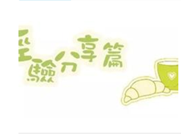
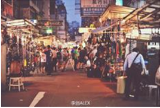

1.列清单 打包行李最担心的事情就是落下东西，行前列出一个整理清单，根据清单上面的备注 挨个整理，如果有遗漏的东西可以随时发现。2.浴帽装卸 浴帽很容易洗干净，所以装鞋子的时候可以借用一下浴帽...3...

我的香港情怀：每次去香港都会有一种莫名其妙的兴奋，也许这是情怀，也许这是真的喜欢，无论香港变成怎样， 我都会一样喜欢，每次香港的作品到微博或者朋友圈，都会有很多声音说为什么你老是拍香港，为什么那么....